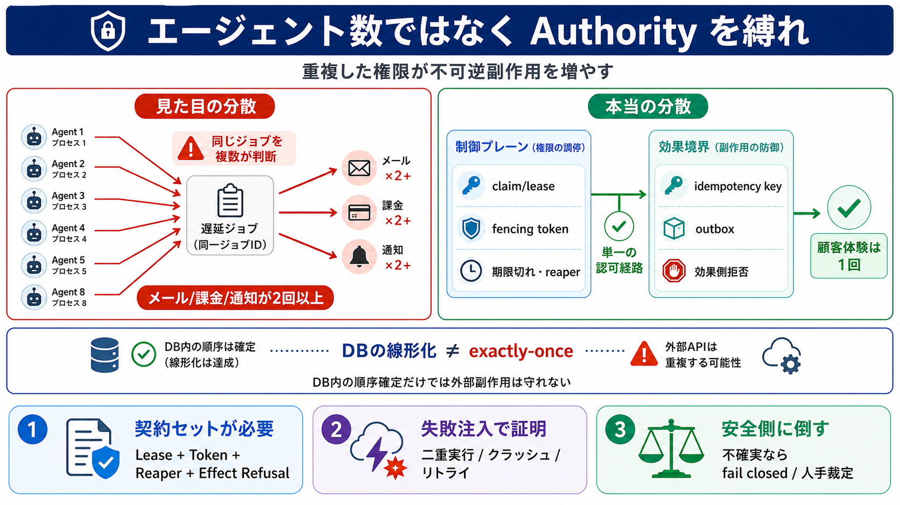

分散①
複数プロセスが動く（見た目）

「複数エージェント」で分散に見えても、権限（authority）の重複を調停できないと、不可逆副作用が“丁寧に競合”して増えるだけです。
並列に動いているように見えても、本質的な分散は「誰が確定して実行してよいか（調停）」が成立しているかです。調停が曖昧なら、同じ“due（期限付きジョブ）”が複数ランタイムで決まってしまいます。
同じ仕事を複数に許すのは“計算の並列化”ではなく“実行の権利の複製”です。権限が複製されると、勝者が誰かだけでなく負けた側が副作用に到達できるかまで破綻します。
スケールの鍵は「control plane（制御プレーン）」と「effect boundary（効果側境界）」を分けて、authorityと副作用の重複抑止を両側で担保することです。
UPDATE … RETURNING や単一ライタ（single-writer）制約は、control planeの一部を線形化（順序確定）します。ですが“外部副作用が1回で済む境界”まで一貫しないと、結局メール/課金が重複し得ます。
authorityの重複を潰すには、少なくとも次の“契約セット”が必要です（並べ替えではなく境界がセットで要る）。
exactly-once は「DB整合性を見た誤認」では成立しません。成立させるなら durable intent/outbox と、効果側の重複抑止（拒否/畳み込み）がセットです。
ローカルDBから仕事を「自称して」実行する自律エージェントは、実装上は基本的に single-writer のソフトウェアと等価です。並列の利得は、調停契約を上回るほど発生しません。
複数実行して結果が同じに見えても、同一キャッシュ・同一観測経路・実質的重複なら独立観測として数えられません。分散の議論は観測（ログや一致）にも波及し、観測の独立性が必要です。
acceptance test（失敗注入）で「副作用が1つに収束する」ことを証明するのが中心です。設計の正しさより、分断・クラッシュ・リトライを織り込んだ検証が効きます。
直列化（single-writer的な線形化点）による調停コストを受け入れ、性能より信頼を取る戦略が示されています。共有される副作用領域が多いほど、並列化の利得が薄れ調停コストが支配的になります。
「エージェント数」ではなく「重複して許される権限（duplicated authority）がどこで無効化され、効果側が1回に畳み込むか」がスケールの本体です。
No references found